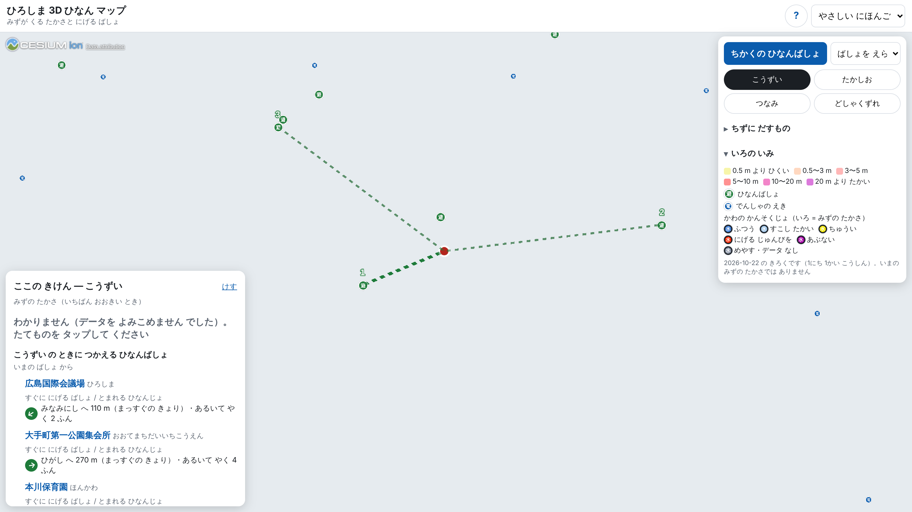
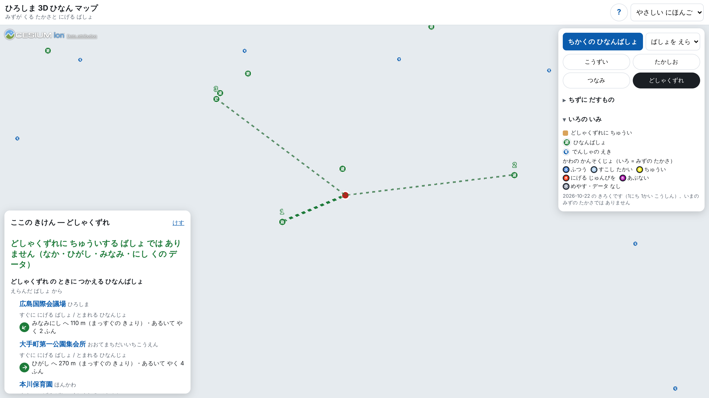

広島 3D 多言語避難ナビ
DoboX の防災データ × 3D 都市モデルで、「今いる建物でどう動くか」を 4 言語で
DoboX の防災データ × 3D 都市モデルで、「今いる建物でどう動くか」を 4 言語で

442 か所。災害ごとに使える場所だけから、近い 3 件を方角と距離で示す。

広島県 危機管理課（国土地理院と照合）
843 区域を地図に重ね、選んだ地点が区域内なら注意を出す。

広島県 砂防課
観測所 37 か所の最新水位を基準水位と比べて色分け。毎日取り込む。

広島県 河川課（10/22 値あり 36 か所）
暫定画面（3D 建物・背景地図なし）【本人】差し替え 2026-10-22 撮影


避難場所名は機械翻訳せず、ローマ字＋施設の種類（例: Motomachi Elementary School）に日本語名を並べる。着想: 【本人】体験・動機を 1〜2 文で
DoboX はブラウザから直接読めず（CORS なし）国外からも接続できないため事前に変換。PLATEAU の 3D Tiles は直接読む。
| データ | 提供元 | ライセンス・条件 |
|---|---|---|
| DoboX 避難所情報 | 広島県 危機管理課 | CC BY 4.0 |
| DoboX 土砂災害警戒区域・特別警戒区域情報 | 広島県 砂防課 | CC BY 4.0 |
| DoboX 観測情報_観測所一覧・観測情報_水位日集計 | 広島県 河川課 | CC BY 4.0（利用規約）※ |
| 3D 都市モデル PLATEAU（広島市 2024 年度） | 国土交通省 | PLATEAU の利用規約 |
| 指定緊急避難場所データ・地理院タイル（淡色地図） | 国土地理院 | 出典明示（避難場所は加工して作成） |
| 鉄道データ N02・GTFS-JP（停留場名）・CesiumJS | 国交省・広島県バス協会 他 | CC BY 4.0・CC0・Apache-2.0 |
出典：広島県インフラマネジメント基盤（DoboX）（CC BY 4.0 https://creativecommons.org/licenses/by/4.0/deed.ja ）。避難所情報（広島県 危機管理課）、土砂災害警戒区域・特別警戒区域情報（広島県 砂防課）、観測情報_観測所一覧・観測情報_水位日集計（広島県 河川課）を加工して作成。※ 河川の 2 データはデータセットのページにライセンスの個別記載がなく、DoboX 利用規約（CC BY 4.0）による。